01
Itaú 将对话式 AI 与治理平台结合
OpenAI 的客户案例介绍巴西银行 Itaú 利用对话界面 ia.i 和治理平台 IARA，为客户与员工推进 AI First 战略。银行业受到严格监管，部署不仅涉及模型能力，也涉及组织控制。该案例展示了企业采用路径，但采集描述没有量化覆盖范围、客户成效、错误率或独立合规评估。
每天一次，过滤 AI 噪音
OpenAI 的客户案例介绍巴西银行 Itaú 利用对话界面 ia.i 和治理平台 IARA，为客户与员工推进 AI First 战略。银行业受到严格监管，部署不仅涉及模型能力，也涉及组织控制。该案例展示了企业采用路径，但采集描述没有量化覆盖范围、客户成效、错误率或独立合规评估。
OpenAI 客户案例称，两名工程师借助 Codex 在数周内构建了 Stack Overflow for Agents。标题提及注册量增至三倍，描述则称 ChatGPT 插件帮助智能体创建量最多增长十倍；两者是不同指标。案例说明编程辅助与对话产品分发可能相互促进，但当前摘要不能证明因果关系或长期留存表现。
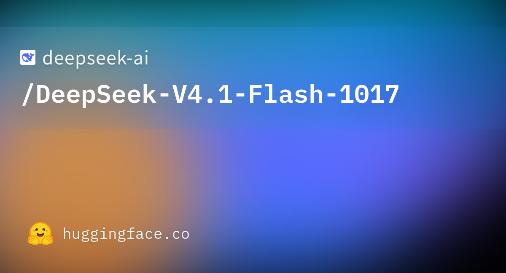
DeepSeek 的 V4.1 Flash 1017 模型页面是本次采集中 Hacker News 热度最高的 AI 新闻，获得 408 分和 421 条评论。讨论链接至 Hugging Face 模型页面和 OpenRouter。该发布值得关注，但仅凭采集到的页面信息，不能确定其相对质量、部署成本或在具体业务中的可靠性。
Fortune 报道 OpenAI 披露了另外四起涉及金融、医疗和政府数据的事件。该报道进入今日 Hacker News 采集结果，为以模型与工具更新为主的新闻增添了安全议题。当前采集信息只包含标题和链接；受影响系统、具体经过与应对措施应以原文为准，不宜据此推断责任或影响范围。
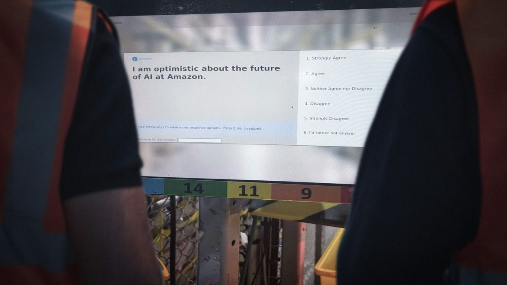
OpenDemocracy 报道称，亚马逊在英国仓库利用 AI 监控工会风险，采集时该报道在 Hacker News 获得 34 分。这涉及劳动关系与 AI 治理，因为职场 AI 可能影响企业观察和应对员工组织活动的方式。当前标题属于报道中的指称，并不能独立证明系统设计、准确性或法律性质。
Tom’s Hardware 报道，一家 AI 实验室在三个城市提供免费管道与暖通维修，以采集机器人训练数据。标题称可穿戴传感器会记录维修过程，服务还包括电气维修和清洁。这体现了机器人训练对真实环境操作示范的需求；当前采集内容没有给出数据集规模、参与条款或机器人性能提升证据。
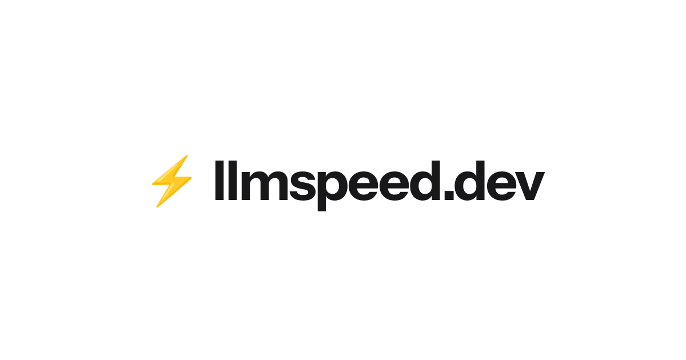
Llmspeed 是一个 Show HN 项目，旨在让用户购买硬件前体验本地语言模型的运行速度。采集时获得 196 分和 65 条评论，其价值在于把抽象性能预期变成可体验的信息。当前标题没有说明预测准确率或支持的配置，购买决策仍应结合目标模型与设备的实际测试。
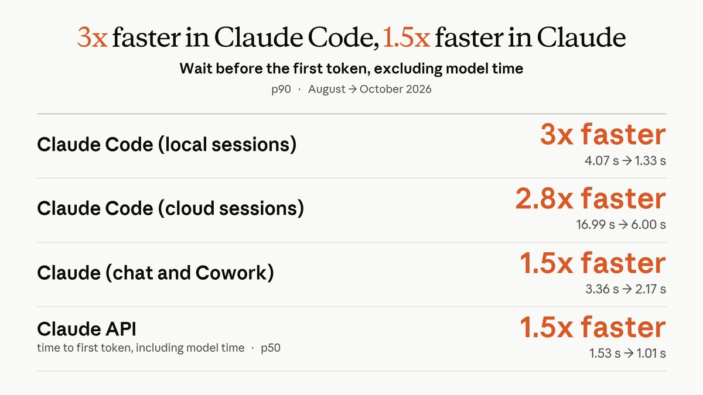
Claude 开发者官方账号表示，Claude Code 现在用 gzip 压缩每轮发送的对话，让请求更快抵达模型；云端会话也会在用户开始输入时启动。这些变化针对请求传输和会话启动延迟。公告称用户可能更早收到响应，但未提供量化延迟基准或针对特定网络环境的保证。
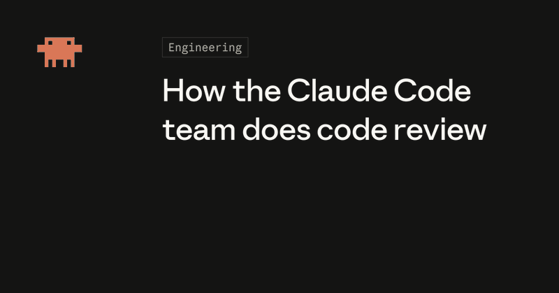
Anthropic 开发者账号称 Claude 编写了约 90% 的 Claude Code 代码，六月至九月合并的拉取请求数量增加一倍以上，回退比例下降逾 40%，并分享了代码审查调整。这些属于公司自报指标。对其他团队而言，重点是理解生成代码增加时，哪些审查实践能够维持正确性。
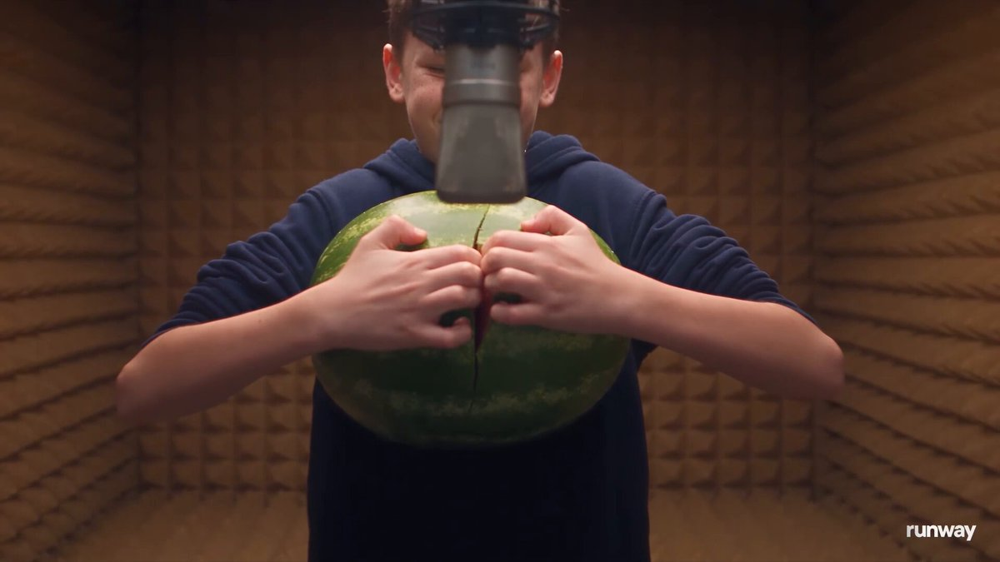
Runway 宣布平台上线 Mirelo SFX 2.0，可生成与视频画面同步的声景并保留对白。这一更新针对视觉生成之后的声音制作环节，帮助创作者添加音效而不替换现有语音。公告没有给出音质对比测试，也未说明不同输入条件下保留对白的能力边界。
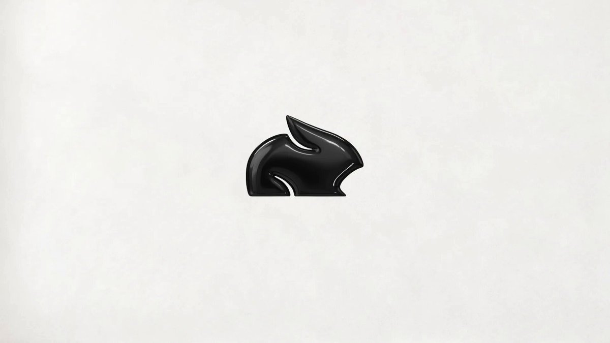
Pika 宣布与 OpenAI 合作推出插件扩展，将创作工具放入 ChatGPT 对话和侧边栏，提供交互式视觉创作体验。对创作者而言，这意味着可以在已有对话流程内使用创作功能。当前公告没有详细说明支持的订阅档位、价格、开放范围或各工具在扩展中的具体行为。
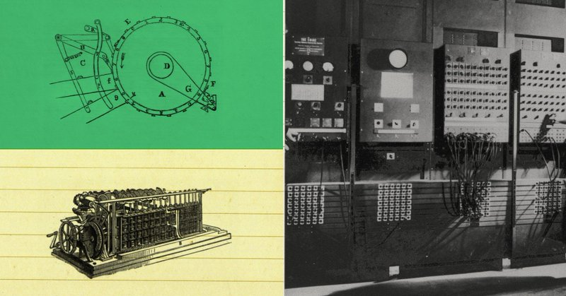
Anthropic 称其 STEM Fellows 项目利用 Claude Mythos 5，根据自然语言指令设计了更高效的量子电路，有些结果比已发表的最佳电路提升一个数量级或更多。这是 AI 辅助科学设计的重要进展主张，但当前公告不足以确定测试的电路类型或改进的普适性。
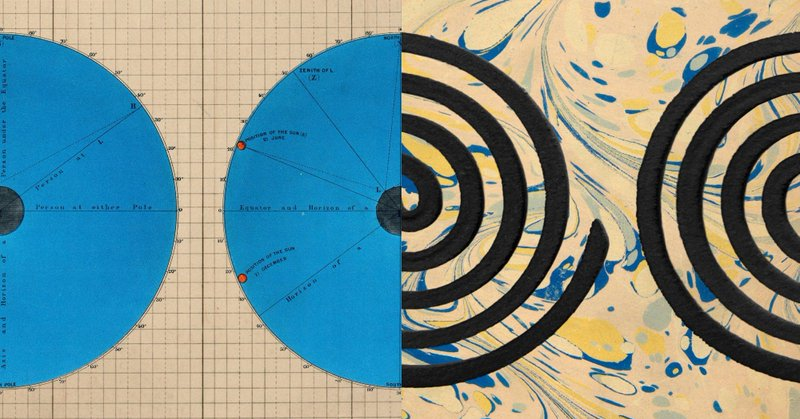
Anthropic 表示已向 METR 团队提供近似员工的访问权限，以落实外部评估安全实践的承诺，同时正与多家评估组织讨论合作。重点在于评估者的访问深度，而非已经得出安全结论。公告本身没有发布评估发现，也不能证明访问不受限制或具体风险已被解决。
Yann LeCun 转发的 Meta 公告介绍了面向编程与智能体工作的开放权重模型 Muse Spark Open。Meta 称其为迄今能力最强的美国开放权重模型，为开发者自主部署模型增加了选择。这一排名属于厂商主张，采集片段没有确立许可证权限、硬件要求或独立任务表现。
Zoubin Ghahramani 分享了 Gemini 4 Argon 智能体在 Minecraft 中合作通关的结果，强调长时规划与问题解决能力，并向研究团队致意。这类演示可用于观察智能体的持续执行与协作，但采集内容没有提供评估协议、重复成功率，或迁移到更复杂现实环境的证据。
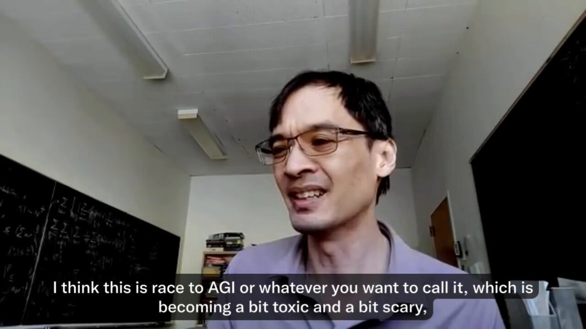
Naveen Rao 表示，组织如今能生成大量内容，却难以验证其正确性和价值；他称自己公司也存在这一问题，增加智能体验证甚至可能让情况恶化。这是从业者判断而非受控研究，但提出了实际工程难题：生成吞吐量增加，并不自动意味着结果更可信。
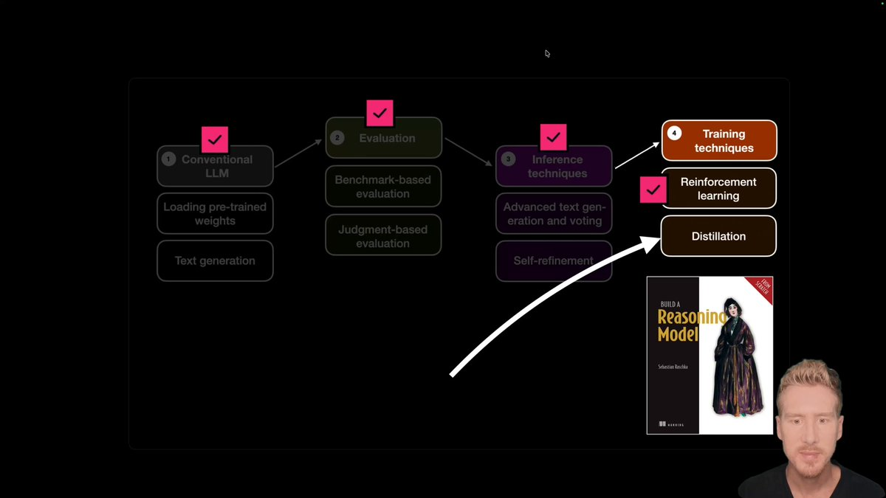
Sebastian Raschka 发布 Reasoning From Scratch 系列第八讲暨最后一讲，介绍蒸馏作为此前强化学习训练之外的高效替代方案。课程有助于实践者理解获得推理能力的不同路径。当前公告说明了教学重点，但没有给出实验结果，也不能证明蒸馏在所有情况下都更省成本。
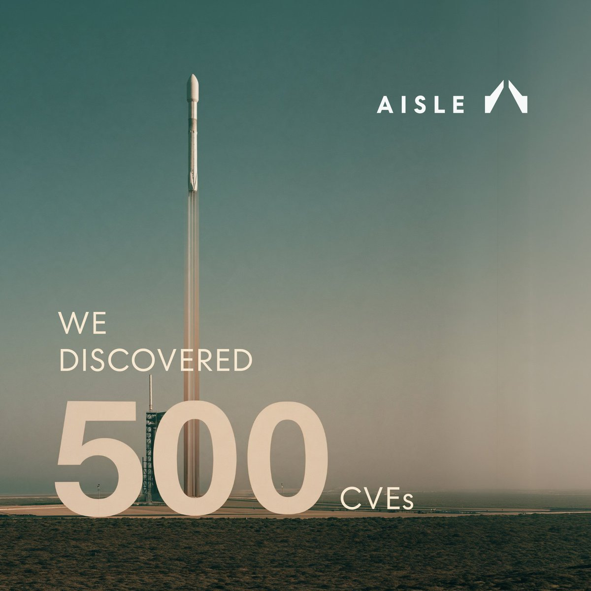
Ian Goodfellow 以 Aisle 第一年的工作为例，强调语言模型周边系统对安全任务的重要性，认为小型、低成本、快速模型也能发挥作用。这为团队权衡模型规模与工程投入提供了架构视角。但该帖子属于评价，没有提供漏洞级结果、对比基准或独立验证的安全效果。
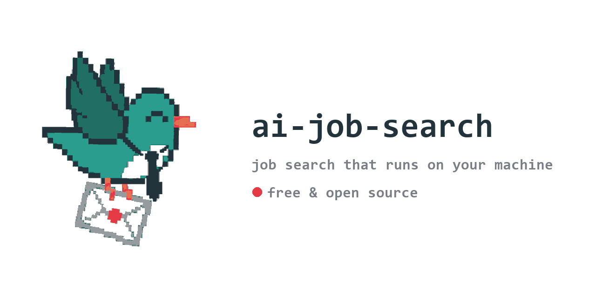
MadsLorentzen 的 ai-job-search 仓库描述了一个基于 Claude Code、在用户机器上运行的求职框架，涵盖职位评估、简历调整、求职信和面试准备，并允许用户分叉代码。采集时约有 4.98 万星。其价值在于整合多个智能体任务，但热度不能证明申请质量、求职效果或外部模型服务的数据处理方式。